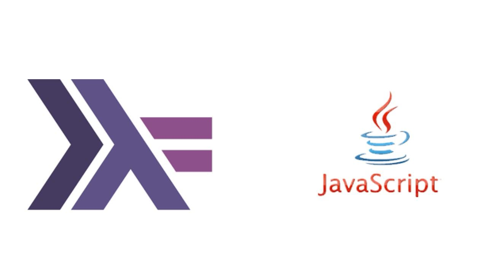

Portfolio
-

Tic Tac Toe
Feb 2022 - Apr 2022
Associated with University of Kent
Built a tic tac toe game in Java where humans play against the computer.
Skills: Java · BlueJ · Problem Solving · Project Planning
-
Data Analysis Report
Feb 2022 - Apr 2022
Associated with University of Kent
Conducted data analysis and wrote Python scripts to classify rejection emails, reducing manual sorting time by 70%.
Skills: Python (Programming Language) · Data Analysis
-

Garage Booking Website
Feb 2022 - Apr 2022
Associated with University of Kent
Constructed a garage booking website, simplifying the booking process and improving user experience. Received more than 85% positive reviews while testing.
Skills: Teamwork · Communication · HTML · CodeIgniter · PHP · User Research · User Interface Design · User-centered Design · User Stories
-
Dynamic Arrays & Recursion
Feb 2022 - Apr 2022
Associated with University of Kent
Implemented dynamic arrays and recursive solutions for computational problems, improving processing efficiency.
Skills: Dynamic Arrays · Problem Solving
-
GP Office Software
Feb 2022 - Apr 2022
Associated with University of Kent
Designed encryption-focused software for GP offices, advancing data security and operational efficiency.
Skills: Teamwork · Presentation Skills
-

Haskell & JavaScript Integration
Feb 2022 - Apr 2022
Associated with University of Kent
Generated JavaScript files from Haskell for in-game data and behavior, deepening game interactivity for a tic-tac-toe game.
Skills: Haskell · Problem Solving · Creative Problem Solving
-
Health Product Development
Feb 2022 - Apr 2022
Associated with University of Kent
Collaborated on developing a health-focused product (smart thin-plaster that collects user's vital data like blood pressure, heart rate, etc.), contributing to a 20% increase in user engagement.
Skills: Teamwork · Business Strategy · eHealth · Project Management · Management
-
Start-up Evaluation
Feb 2022 - Apr 2022
Associated with University of Kent
Evaluated start-up ideas and made business plans, ensuring realistic and early revenue generation strategies.
Skills: Business Strategy · Business Analysis · Business Development · New Business Development · Business Planning
-

Turtlebot3 Navigation
Feb 2022 - Apr 2022
Associated with University of Kent
Programmed shortest path algorithms for Turtlebot3 in Gazebo and Rviz, enhancing robotic navigation accuracy.
Skills: Gazebo · Rviz · Cognitive Robotics · Teamwork
-

Gym Website
Feb 2022 - Apr 2022
Associated with University of Kent
Created a user interactive gym website using CodeIgniter, streamlining user registration and data management.
Skills: HTML · CSS · CodeIgniter
-
Search Algorithm
Feb 2022 - Apr 2022
Associated with University of Kent
Integrated greedy, A*, BFS, and DFS search algorithms into a Pac-Man game, improving pathfinding efficiency.
Skills: Artificial Intelligence (AI) · Search Algorithms · K-Nearest Neighbors (KNN) · Java